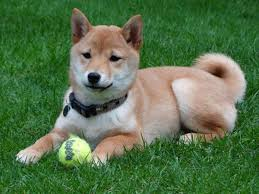

The Moog company pioneered the commercial manufacture of modular voltage-controlled analog synthesizer systems in the early 1950s.
| Photo | Description | Price |
|---|---|---|
|
The pug is a breed of dog with physically distinctive features of a wrinkly, short-muzzled face, and curled tail. The breed has a fine, glossy coat that comes in a variety of colours, most often fawn or black, and a compact square body with well-developed muscles. | $459 |
|
The Pomeranian (often known as a Pom) is a breed of dog of the Spitz type that is named for the Pomerania region in north-west Poland and north-east Germany in Central Europe. Classed as a toy dog breed because of its small size, the Pomeranian is descended from larger Spitz-type dogs, specifically the German Spitz. | $235 |
|  | The Shiba Inu (柴犬, Japanese: [ɕiba̠ kɛn, shiba-ken]) is a Japanese breed of hunting dog. A small-to-medium breed, it is the smallest of the six original and distinct spitz breeds of dog native to Japan.[1] A small, alert and agile dog that copes very well with mountainous terrain and hiking trails, the Shiba Inu was originally bred for hunting. | $946 |
The pug is a breed of dog with physically distinctive features of a wrinkly, short-muzzled face, and curled tail. The breed has a fine, glossy coat that comes in a variety of colours, most often fawn or black, and a compact square body with well-developed muscles.
The Pomeranian (often known as a Pom) is a breed of dog of the Spitz type that is named for the Pomerania region in north-west Poland and north-east Germany in Central Europe. Classed as a toy dog breed because of its small size, the Pomeranian is descended from larger Spitz-type dogs, specifically the German Spitz
The Shiba Inu (柴犬, Japanese: [ɕiba̠ kɛn, shiba-ken]) is a Japanese breed of hunting dog. A small-to-medium breed, it is the smallest of the six original and distinct spitz breeds of dog native to Japan.[1] A small, alert and agile dog that copes very well with mountainous terrain and hiking trails, the Shiba Inu was originally bred for hunting.
The Moog synthesizer is a modular synthesizer developed by the American engineer Robert Moog. Moog debuted it in 1964, and Moog's company R. A. Moog Co. (later known as Moog Music) produced numerous models from 1965 to 1980.[1] It was the first commercial synthesizer, and is credited with creating the analog synthesizer as it is known today.
The Moog synthesizer is a modular synthesizer developed by the American engineer Robert Moog. Moog debuted it in 1964, and Moog's company R. A. Moog Co. (later known as Moog Music) produced numerous models from 1965 to 1980.[1] It was the first commercial synthesizer, and is credited with creating the analog synthesizer as it is known today.
The Moog synthesizer is a modular synthesizer developed by the American engineer Robert Moog. Moog debuted it in 1964, and Moog's company R. A. Moog Co. (later known as Moog Music) produced numerous models from 1965 to 1980.[1] It was the first commercial synthesizer, and is credited with creating the analog synthesizer as it is known today.
he Moog synthesizer is a modular synthesizer developed by the American engineer Robert Moog. Moog debuted it in 1964, and Moog's company R. A. Moog Co
he Moog synthesizer is a modular synthesizer developed by the American engineer Robert Moog. Moog debuted it in 1964, and Moog's company R. A. Moog Co
Custom borders in css